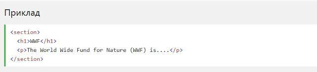
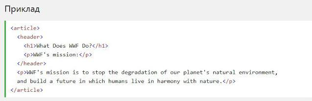

HTML5 Семантичні елементи
Семантичний елемент чітко описує його значення як для браузера, так і для розробника.
Приклади не семантичних елементів: < div > і < span > - нічого не говорить
про його вміст.
Приклади семантичних елементів: < form >, < table > і < article > - чітко
визначає його зміст.
Підтримка браузерів
Семантичні елементи HTML5 підтримуються у всіх сучасних браузерах.
Крім того, ви можете "навчити" старих браузерів, як обробляти "невідомі елементи".
Прочитайте про це в підтримці браузера HTML5.
HTML5 пропонує нові семантичні елементи для визначення різних частин веб-сторінки:
HTML5 < section > елемент
Елемент < section >визначає розділ в документі.
Згідно з документацією в3к'с HTML5: "розділ представляє собою тематичну угруповання контенту, зазвичай з заголовком".
Домашня сторінка зазвичай може бути розділена на розділи для ознайомлення, змісту і контактної інформації.

HTML5 < article > елемент
Елемент < article > визначає незалежний, автономний вміст.
Стаття повинна мати сенс самостійно, і вона повинна мати можливість читати його незалежно від іншої частини веб-сайту.
Приклади того, де можна використовувати елемент < article >:
- Повідомлення на форумі
- Блозі
- Газетна стаття
HTML5 < header > елемент
Елемент < header >задає заголовок для документа або розділу.
Елемент < header >повинен використовуватися в якості контейнера для
вступного змісту.
В одному документі може бути кілька елементів < header >.
У наступному прикладі визначається заголовок для статті:
